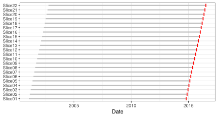
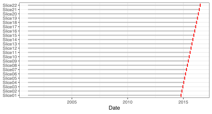
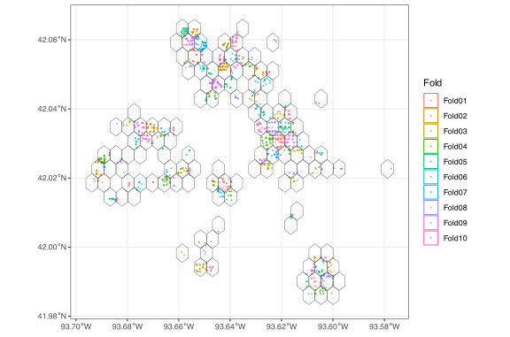
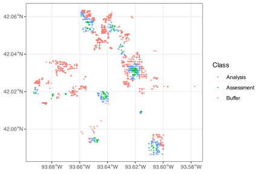
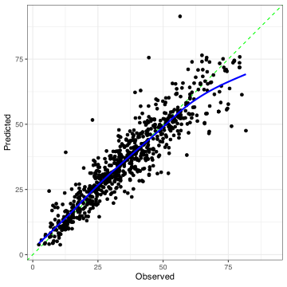

req_pkg <- c("Cubist", "future.mirai", "parallelly", "probably", "rules", "spatialsample",
"tidymodels", "tidysdm")
# Check to see if they are installed:
pkg_installed <- vapply(req_pkg, rlang::is_installed, logical(1))
# Install missing packages:
if ( any(!pkg_installed) ) {
install_list <- names(pkg_installed)[!pkg_installed]
pak::pak(install_list)
}10 Measuring Performance with Resampling
This chapter outlines how to create objects to facilitate resampling. At the end, Section 10.11 illustrates how to use the resampling objects to produce good estimates of performance for a model.
10.1 Requirements
We will use the ames, concrete, and Chicago data sets from the modeldata package (which is automatically loaded below) to illustrate some of the methods. The other data, Orthodont, can be obtained in the nlme package which comes with each R installation.
You’ll need 8 packages (Cubist, future.mirai, parallelly, probably, rules, spatialsample, tidymodels, and tidysdm) for this chapter. You can install them via:
Let’s load the meta package and manage some between-package function conflicts.
library(tidymodels)
tidymodels_prefer()
theme_set(theme_bw())10.2 Basic Methods and Data Structures
The rsample package provides many functions to facilitate resampling. For now, we’ll assume an initial split into a training and test set has been made (but see Section 10.4 below for three-way splits).
Let’s use the concrete data for illustration:
set.seed(82)
concrete_split <- initial_split(concrete)
concrete_tr <- training(concrete_split)
concrete_te <- testing(concrete_split)All resampling methods use the training set as the substrate for creating resamples. We’ll demonstrate the main tools and functions using basic bootstrap resampling and then discuss the other resampling methods.
The function that we’ll use to demonstrate is rsample::bootstraps(). Its main option, times, describes how many resamples to create. Let’s make five resamples:
set.seed(380)
concrete_rs <- bootstraps(concrete, times = 5)This creates a tibble with five rows and two columns:
concrete_rs
#> # Bootstrap sampling
#> # A tibble: 5 × 2
#> splits id
#> <list> <chr>
#> 1 <split [1030/355]> Bootstrap1
#> 2 <split [1030/408]> Bootstrap2
#> 3 <split [1030/369]> Bootstrap3
#> 4 <split [1030/375]> Bootstrap4
#> 5 <split [1030/378]> Bootstrap5We’ll investigate the splits column in a bit. The id column gives each row a name (corresponding to a resample). Some resampling methods, such as repeated cross-validation, can have additional identification columns.
The object has two additional classes bootstraps and rset that differentiate it from a standard tibble.
This collection of splits is called an "rset" and has specific rules. The object above is defined as a set of five bootstrap samples. If we delete a row, it breaks that definition, and the class drops back down to a basic tibble:
concrete_rs[-1,]
#> # A tibble: 4 × 2
#> splits id
#> <list> <chr>
#> 1 <split [1030/408]> Bootstrap2
#> 2 <split [1030/369]> Bootstrap3
#> 3 <split [1030/375]> Bootstrap4
#> 4 <split [1030/378]> Bootstrap5The “A tibble: 4 × 2” title is different from the original title of “Bootstrap sampling.” This, and the class values, give away the difference. You can add columns without violating the definition.
10.2.1 Split Objects
Note the splits column in the output above. This is a list column in the data frame. It contains an rsplit object that tells us which rows of the training set go into our analysis and assessment sets. As a reminder:
- The analysis set (of size \(n_{fit}\)) estimates quantities associated with preprocessing, model training, and postprocessing.
- The assessment set (\(n_{pred}\)) is only used for prediction so that we can compute measures of model effectiveness (e.g., RMSE, classification accuracy, etc).
When we see output “<split [1030/408]>” this indicates a binary split where the analysis set has 1030 rows, and the assessment set has 408 rows.
To get the analysis and assessment sets, there are two eponymous functions. For a specific split:
If we want to get the specific row indices of the training set:
ex_ind <- as.integer(ex_split, data = "assessment")
head(ex_ind)
#> [1] 2 5 6 14 15 17
length(ex_ind)
#> [1] 355You shouldn’t really have to interact with these objects at all.
10.3 Basic Resampling Tools
rsample contains several functions that resample data whose rows are thought to be statistically independent of one another. Almost all of these functions contain options for stratified resampling.
We’ll show an example with basic 10-fold cross-validation below in Section 10.11.
Let’s examine each flavor of resampling mentioned in the book chapter.
10.4 Validation Sets
To create a validation set, the first split should use rsample::initial_validation_split():
To make an rset object that can be used with most of tidymodel’s resampling machinery, we can use the rsample::validation_set() function to produce one (taking the initial three-way split as input):
concrete_rs <- validation_set(concrete_split)
concrete_rs
#> # A tibble: 1 × 2
#> splits id
#> <list> <chr>
#> 1 <split [824/103]> validationAt this point, we can use concrete_rs as if it were any other rset object.
10.5 Monte Carlo Cross-Validation
The relevant function here is mc_cv() with two main arguments:
-
timesis the number of resamples -
propis the proportion of the data that is allocated to the analysis set.
For example:
set.seed(380)
mc_cv(concrete_tr, times = 3, prop = 9 / 10)
#> # Monte Carlo cross-validation (0.9/0.1) with 3 resamples
#> # A tibble: 3 × 2
#> splits id
#> <list> <chr>
#> 1 <split [741/83]> Resample1
#> 2 <split [741/83]> Resample2
#> 3 <split [741/83]> Resample3
# or
mc_cv(concrete_tr, times = 2, prop = 2 / 3)
#> # Monte Carlo cross-validation (0.67/0.33) with 2 resamples
#> # A tibble: 2 × 2
#> splits id
#> <list> <chr>
#> 1 <split [549/275]> Resample1
#> 2 <split [549/275]> Resample210.6 V-Fold Cross-Validation
Basic V-fold cross-validation is performed using vfold_cv(). The v argument defines the number of folds and defaults to v = 10.
set.seed(380)
concrete_rs <- vfold_cv(concrete_tr)
concrete_rs
#> # 10-fold cross-validation
#> # A tibble: 10 × 2
#> splits id
#> <list> <chr>
#> 1 <split [741/83]> Fold01
#> 2 <split [741/83]> Fold02
#> 3 <split [741/83]> Fold03
#> 4 <split [741/83]> Fold04
#> 5 <split [742/82]> Fold05
#> 6 <split [742/82]> Fold06
#> # ℹ 4 more rowsAs with the other tools, the strata argument can balance the outcome distributions across folds. It takes a single column as input.
Another argument of note is repeats, which describes how many sets of V resamples should be created. This generated an additional column called id2:
set.seed(380)
concrete_rs <- vfold_cv(concrete_tr, repeats = 2)
concrete_rs
#> # 10-fold cross-validation repeated 2 times
#> # A tibble: 20 × 3
#> splits id id2
#> <list> <chr> <chr>
#> 1 <split [741/83]> Repeat1 Fold01
#> 2 <split [741/83]> Repeat1 Fold02
#> 3 <split [741/83]> Repeat1 Fold03
#> 4 <split [741/83]> Repeat1 Fold04
#> 5 <split [742/82]> Repeat1 Fold05
#> 6 <split [742/82]> Repeat1 Fold06
#> # ℹ 14 more rows10.7 The Bootstrap
First, there are special occasions when the regular set of bootstrap samples needs to be supplemented with an additional resample that can be used to measure the resubstitution rate (predicting the analysis set after fitting the data on the same analysis set). The function that produces this extra row is called apparent(), which is the same name as the function argument:
set.seed(380)
concrete_rs <- bootstraps(concrete, times = 5, apparent = TRUE)Note that the id column reflects this, and the split label shows that the analysis and assessment sets are the same size.
The tidymodels resampling functions are aware of the potential presence of the “apparent” sample and will not include it at inappropriate times. For example, if we resample a model with and without using apparent = TRUE, we’ll get the same results as long as we use the same random number seed to make each set of resamples.
Secondly, there is a strata argument for this function. That enables different bootstrap samples to be taken within each stratum, which are combined into the final resampling set. Technically, this isn’t a bootstrap sample, but it is probably close enough to be useful.
10.8 Time Series Data
Usually, the most recent data are used to evaluate performance for time series data. The function initial_time_split() can be used to make the initial split. We’ll use the Chicago data to demonstrate:
n <- nrow(Chicago)
# To get 30 days of data
prop_30 <- (n - 30) / n
chi_split <- initial_time_split(Chicago, prop = prop_30)
chi_split
#> <Training/Testing/Total>
#> <5668/30/5698>
chi_tr <- training(chi_split)
chi_te <- testing(chi_split)Let’s say that we want
- 5,000 days in our analysis set,
- 30 day assessment sets
- shift the 30-day window 30 days ahead
The data set has a column with the Date class. We can use this to partition the data in case there is an unequal number of data points in our 30-day period. The sliding_period() can be used with a date or date/time input, while sliding_index() can be used for equally spaced data.
Let’s use sliding_period() for this example, annotate the argument logic in comments, and then compute a few columns for the start/stop dates for the analysis and assessment sets (for illustration):
chi_rs <-
sliding_period(
chi_tr,
index = date,
period = "day", # Could be "year", "quarter", "month", "week", or "day"
lookback = 5000, # 5000 days in the analysis sets
assess_start = 1, # Start the assessment set 1 day after analysis set
assess_stop = 30, # Stop the assessment set 20 days after analysis set
step = 30 # Jump ahead 30 days between resamples; no assessment overlap in assessments
) %>%
mutate(
fit_start = map_vec(splits, ~ min(analysis(.x)$date)),
fit_stop = map_vec(splits, ~ max(analysis(.x)$date)),
perf_start = map_vec(splits, ~ min(assessment(.x)$date)),
perf_stop = map_vec(splits, ~ max(assessment(.x)$date))
)
chi_rs
#> # Sliding period resampling
#> # A tibble: 22 × 6
#> splits id fit_start fit_stop perf_start perf_stop
#> <list> <chr> <date> <date> <date> <date>
#> 1 <split [5001/30]> Slice01 2001-01-22 2014-10-01 2014-10-02 2014-10-31
#> 2 <split [5001/30]> Slice02 2001-02-21 2014-10-31 2014-11-01 2014-11-30
#> 3 <split [5001/30]> Slice03 2001-03-23 2014-11-30 2014-12-01 2014-12-30
#> 4 <split [5001/30]> Slice04 2001-04-22 2014-12-30 2014-12-31 2015-01-29
#> 5 <split [5001/30]> Slice05 2001-05-22 2015-01-29 2015-01-30 2015-02-28
#> 6 <split [5001/30]> Slice06 2001-06-21 2015-02-28 2015-03-01 2015-03-30
#> # ℹ 16 more rowsThe first analysis set starts on 2001-01-22 and ends 5,000 days later on 2014-10-01. The next day (2014-10-02), the analysis set includes 30 days and stops on 2014-10-31.
For the second resample, the analysis and assessment sets both start 30 days later.
Here is a visualization of the date periods defined by the resampling scheme that illustrates why the method is sometimes called rolling origin forecast resampling. The figure also shows that the assessment sets are very small compared to the analysis sets.
chi_rs %>%
ggplot(aes(y = id)) +
geom_segment(aes(x = fit_start, xend = fit_stop, yend = id), col = "grey", linewidth = 1) +
geom_segment(aes(x = perf_start, xend = perf_stop, yend = id), col = "red", linewidth = 3) +
labs(y = NULL, x = "Date")
One variation of this approach is to cumulately increase the analysis set by keeping the starting date the same (inside of sliding/rolling). For this, we can make the “lookback” infinite but use the skip argument to remove the large number of resamples that contain fewer than 5,000 days in the analysis sets:
chi_rs <-
sliding_period(
chi_tr,
index = date,
period = "day",
lookback = Inf, # Use all data before assessment
assess_start = 1,
assess_stop = 30,
step = 30,
skip = 5000 # Drop first 5000 results so assessment starts at same time
) %>%
mutate(
fit_start = map_vec(splits, ~ min(analysis(.x)$date)),
fit_stop = map_vec(splits, ~ max(analysis(.x)$date)),
perf_start = map_vec(splits, ~ min(assessment(.x)$date)),
perf_stop = map_vec(splits, ~ max(assessment(.x)$date))
)
chi_rs
#> # Sliding period resampling
#> # A tibble: 22 × 6
#> splits id fit_start fit_stop perf_start perf_stop
#> <list> <chr> <date> <date> <date> <date>
#> 1 <split [5001/30]> Slice01 2001-01-22 2014-10-01 2014-10-02 2014-10-31
#> 2 <split [5031/30]> Slice02 2001-01-22 2014-10-31 2014-11-01 2014-11-30
#> 3 <split [5061/30]> Slice03 2001-01-22 2014-11-30 2014-12-01 2014-12-30
#> 4 <split [5091/30]> Slice04 2001-01-22 2014-12-30 2014-12-31 2015-01-29
#> 5 <split [5121/30]> Slice05 2001-01-22 2015-01-29 2015-01-30 2015-02-28
#> 6 <split [5151/30]> Slice06 2001-01-22 2015-02-28 2015-03-01 2015-03-30
#> # ℹ 16 more rowsNote that the values in the fit_stop column are the same. Visually:
chi_rs %>%
ggplot(aes(y = id)) +
geom_segment(aes(x = fit_start, xend = fit_stop, yend = id), col = "grey", linewidth = 1) +
geom_segment(aes(x = perf_start, xend = perf_stop, yend = id), col = "red", linewidth = 3) +
labs(y = NULL, x = "Date") 
10.9 Spatial Data
We split the Ames data into a training and testing set back in Section 3.8 using this code:
library(sf)
#> Linking to GEOS 3.13.0, GDAL 3.8.5, PROJ 9.5.1; sf_use_s2() is TRUE
library(spatialsample)
library(tidysdm)
ames_sf <-
ames %>%
st_as_sf(coords = c("Longitude", "Latitude"), crs = 4326)
set.seed(318)
ames_block_buff_split <-
spatial_initial_split(
ames_sf,
prop = 0.2,
strategy = spatial_block_cv,
method = "continuous",
n = 25,
square = FALSE,
buffer = 250)
ames_tr <- training(ames_block_buff_split)
ames_te <- testing(ames_block_buff_split)The options for resampling are basically the same as the initial split. For example, with block resampling, we create a grid on the training set and allocate specific grids to specific assessment sets. Buffering can also be used for each resample. The spatial_block_cv() function in the spatialsample package and has a v argument for the number of resamples:
set.seed(652)
ames_rs <-
spatial_block_cv(
ames_tr,
v = 10,
method = "continuous",
n = 25,
square = FALSE,
buffer = 250)
ames_rs
#> # 10-fold spatial block cross-validation
#> # A tibble: 10 × 2
#> splits id
#> <list> <chr>
#> 1 <split [1047/167]> Fold01
#> 2 <split [1098/182]> Fold02
#> 3 <split [1225/147]> Fold03
#> 4 <split [1130/174]> Fold04
#> 5 <split [1123/155]> Fold05
#> 6 <split [1235/95]> Fold06
#> # ℹ 4 more rowsThere is an overall autoplot() method that can be used to show the grid:
autoplot(ames_rs, cex = 1 / 3, show_grid = TRUE)
We can also autoplot() individual splits to see the analysis and assessment set.
autoplot(ames_rs$splits[[1]], cex = 1 / 2)
10.10 Grouped or Multi-Level Data
Returning to the orthodontal data from Section 3.7, we use the initial split:
There are several resampling functions for these data in the rsample package, including: group_vfold_cv(), group_bootstraps(), and group_mc_cv(). For example:
library(vctrs)
# Subjects in the training set:
vec_unique_count(orth_tr$Subject)
#> [1] 18
set.seed(714)
orth_rs <-
group_vfold_cv(orth_tr, group = Subject, v = 10) %>%
mutate(num_subjects = map_int(splits, ~ vec_unique_count(assessment(.x)$Subject)))
orth_rs
#> # Group 10-fold cross-validation
#> # A tibble: 10 × 3
#> splits id num_subjects
#> <list> <chr> <int>
#> 1 <split [64/8]> Resample01 2
#> 2 <split [64/8]> Resample02 2
#> 3 <split [64/8]> Resample03 2
#> 4 <split [64/8]> Resample04 2
#> 5 <split [64/8]> Resample05 2
#> 6 <split [64/8]> Resample06 2
#> # ℹ 4 more rowsTo leave a single subject out for each resample, we could have set v to be 18.
10.11 Estimating Performance
Now that we can create different types of resamples for our training set, how do we actually resample a model to get accurate performance statistics?
tidymodels contains high-level functions for this purpose, so there is typically no need to loop over rows of the resampling objects to get the data sets, train the model, etc.
The fit_resamples() function can do all of this for you. It takes a model (or workflow) in conjunction with a resampling object as inputs.
To demonstrate, let’s re-use the concrete data and create an object for a simple 10-fold cross-validation:
set.seed(426)
concrete_split <- initial_split(concrete, prop = 3 / 4)
concrete_tr <- training(concrete_split)
concrete_te <- testing(concrete_split)
concrete_rs <- vfold_cv(concrete_tr)Let’s use a Cubist model for the data. It creates a set of rules from the data (derived from a regression tree) and, for each rule, creates a corresponding linear regression for the training set points covered by the rule. In the end, a sample is predicted, perhaps using multiple rules, and the average of the linear regression models is used as the prediction.
Usually, we use a boosting-like process called _model committees _to create an ensemble of rule sets. Instead, we will make a single rule set. We’ll need to load the rules package to load this type of model into the parsnip model database.
library(rules)
rules_spec <- cubist_rules(committees = 1)To specify the model in fit_resamples(), there are two options:
- The first two arguments can be a model specification and a preprocessor (in that order). The preprocessor could be a recipe or a standard R formula.
- The first argument can be a workflow.
After the model specification, the resamples argument takes the resamping object.
From here, we can run fit_resamples(). Note that the Cubist model does not use any random numbers. If it did, we would probably want to set the random number seed before using fit_resamples().
Our code:
concrete_res <- fit_resamples(rules_spec, compressive_strength ~ ., resamples = concrete_rs)
concrete_res
#> # Resampling results
#> # 10-fold cross-validation
#> # A tibble: 10 × 4
#> splits id .metrics .notes
#> <list> <chr> <list> <list>
#> 1 <split [694/78]> Fold01 <tibble [2 × 4]> <tibble [0 × 3]>
#> 2 <split [694/78]> Fold02 <tibble [2 × 4]> <tibble [0 × 3]>
#> 3 <split [695/77]> Fold03 <tibble [2 × 4]> <tibble [0 × 3]>
#> 4 <split [695/77]> Fold04 <tibble [2 × 4]> <tibble [0 × 3]>
#> 5 <split [695/77]> Fold05 <tibble [2 × 4]> <tibble [0 × 3]>
#> 6 <split [695/77]> Fold06 <tibble [2 × 4]> <tibble [0 × 3]>
#> # ℹ 4 more rowsThis looks a lot like our resampling object. There are some new columns. .metrics contains data frames with performance statistics for the particular resample. The .notes column contains any warnings or error messages that the model produced; none were produced by these 10 model fits. Note that, if there are errors, fit_resamples() does not stop computations.
How can we get our performance estimates? To aggregate the data in this object, there is a set of collect_*() functions. The first is collect_metrics(). By default, it returns the averages of the resampled estimates:
collect_metrics(concrete_res)
#> # A tibble: 2 × 6
#> .metric .estimator mean n std_err .config
#> <chr> <chr> <dbl> <int> <dbl> <chr>
#> 1 rmse standard 6.503 10 0.2396 Preprocessor1_Model1
#> 2 rsq standard 0.8517 10 0.01170 Preprocessor1_Model1Note the n and std_err columns. To get the per-resample estimates:
collect_metrics(concrete_res, summarize = FALSE)
#> # A tibble: 20 × 5
#> id .metric .estimator .estimate .config
#> <chr> <chr> <chr> <dbl> <chr>
#> 1 Fold01 rmse standard 6.764 Preprocessor1_Model1
#> 2 Fold01 rsq standard 0.8462 Preprocessor1_Model1
#> 3 Fold02 rmse standard 6.925 Preprocessor1_Model1
#> 4 Fold02 rsq standard 0.8044 Preprocessor1_Model1
#> 5 Fold03 rmse standard 6.652 Preprocessor1_Model1
#> 6 Fold03 rsq standard 0.8298 Preprocessor1_Model1
#> # ℹ 14 more rowsIf there were issues with the computations, collect_notes(concrete_res) would print a catalog of messages.
Next, let’s look at a few customizations for fit_resamples().
10.11.1 Parallel Processing
We fit 10 different Cubist models to 10 slightly different data sets. None of these computations depend on one another. This is the case of an “embarrassingly parallel” computing issue. We can increase our computational efficiency by running training the models on multiple “worker” processes on our computer(s).
The future package can run the resamples in parallel. The plan() function sets the parallel processing engine. There are a few plans that can be used:
- The most common approach is “multisession”. This uses a parallel socket cluster (akak “psock cluster”) on your local computer. It is available for all operating systems.
- Another option (not available on Windows) is “multicore”. The forks the current R session into different worker processes.
- The “cluster” option is most useful for having worker processes on different machines.
- The “sequential” plan is regular, non-parallel computing.
There are several other packages with plans: future.batchtools, future.callr, and future.mirai.
Once we know a plan, we run the following code (once) before running operations that can be done in parallel:
library(future)
parallelly::availableCores()
plan(multisession)Alternatively, the more recent mirai “engine” for parallel processing can also be used for additional efficiency.
library(future.mirai)
#> Loading required package: future
plan(mirai_multisession)This will generally increase the efficiency of the resampling process.
10.11.2 Other Options
Let’s look at some other options. First, note that the results did not include the trained models or the out-of-sample predicted results. This is the default because there is no way of knowing how much memory will be required to keep these values.
We’ll talk about accessing the fitted models in the next sections.
To save the predictions, we can use an R convention of a “control function.” These functions are reserved for specifying ancillary aspects of the computations. For fit_resamples() the control function is called control_resamples(), and it has an option called save_pred. When set to TRUE, the out-of-sample predictions are retained.
ctrl <- control_resamples(save_pred = TRUE)Let’s also estimate different metrics. As mentioned back in Section 2.5, a metric set is used to specify statistics for model efficacy. fit_resamples() has an option called metrics that we can use to pass in a metric set.
Let’s re-run our model with these two changes:
reg_mtr <- metric_set(rmse, rsq, ccc, mae)
concrete_opts_res <- fit_resamples(
rules_spec,
compressive_strength ~ .,
resamples = concrete_rs,
metrics = reg_mtr,
control = ctrl
)
concrete_opts_res
#> # Resampling results
#> # 10-fold cross-validation
#> # A tibble: 10 × 5
#> splits id .metrics .notes .predictions
#> <list> <chr> <list> <list> <list>
#> 1 <split [694/78]> Fold01 <tibble [4 × 4]> <tibble [0 × 3]> <tibble [78 × 4]>
#> 2 <split [694/78]> Fold02 <tibble [4 × 4]> <tibble [0 × 3]> <tibble [78 × 4]>
#> 3 <split [695/77]> Fold03 <tibble [4 × 4]> <tibble [0 × 3]> <tibble [77 × 4]>
#> 4 <split [695/77]> Fold04 <tibble [4 × 4]> <tibble [0 × 3]> <tibble [77 × 4]>
#> 5 <split [695/77]> Fold05 <tibble [4 × 4]> <tibble [0 × 3]> <tibble [77 × 4]>
#> 6 <split [695/77]> Fold06 <tibble [4 × 4]> <tibble [0 × 3]> <tibble [77 × 4]>
#> # ℹ 4 more rowsThe expanded set of metrics:
collect_metrics(concrete_opts_res)
#> # A tibble: 4 × 6
#> .metric .estimator mean n std_err .config
#> <chr> <chr> <dbl> <int> <dbl> <chr>
#> 1 ccc standard 0.9198 10 0.006753 Preprocessor1_Model1
#> 2 mae standard 4.621 10 0.1657 Preprocessor1_Model1
#> 3 rmse standard 6.503 10 0.2396 Preprocessor1_Model1
#> 4 rsq standard 0.8517 10 0.01170 Preprocessor1_Model1Notice that there is now a column named .predictions. The number of rows in the tibbles matches the sizes of the assessment sets shown in the splits column; these are the held-out predicted values.
To obtain these values, there are collect_predictions() and augment():
heldout_pred <- collect_predictions(concrete_opts_res)
heldout_pred
#> # A tibble: 772 × 5
#> .pred id .row compressive_strength .config
#> <dbl> <chr> <int> <dbl> <chr>
#> 1 40.56 Fold01 8 40.76 Preprocessor1_Model1
#> 2 29.34 Fold01 14 29.22 Preprocessor1_Model1
#> 3 32.65 Fold01 27 37.36 Preprocessor1_Model1
#> 4 24.10 Fold01 38 20.73 Preprocessor1_Model1
#> 5 61.61 Fold01 53 55.16 Preprocessor1_Model1
#> 6 12.30 Fold01 71 9.74 Preprocessor1_Model1
#> # ℹ 766 more rows
# Same but merges them with the original training data
augment(concrete_opts_res)
#> # A tibble: 772 × 11
#> .pred .resid cement blast_furnace_slag fly_ash water superplasticizer
#> <dbl> <dbl> <dbl> <dbl> <dbl> <dbl> <dbl>
#> 1 45.54 -12.69 168 42.1 163.8 121.8 5.7
#> 2 54.82 -1.131 190 190 0 228 0
#> 3 32.77 0.07400 160 188 146 203 11
#> 4 9.688 2.862 190.3 0 125.2 166.6 9.9
#> 5 47.36 -10.09 218.9 0 124.1 158.5 11.3
#> 6 16.93 -9.526 168.9 42.2 124.3 158.3 10.8
#> # ℹ 766 more rows
#> # ℹ 4 more variables: coarse_aggregate <dbl>, fine_aggregate <dbl>, age <int>,
#> # compressive_strength <dbl>From here, we can do exploratory data analysis to understand where our model can be improved.
One other option: the probably package has a simple interface for obtaining plots of the observed and predicted values (i.e., a regression “calibration” plot):
library(probably)
cal_plot_regression(concrete_opts_res)
Not too bad but there are fairly large outliers that seem to occur more with mixtures corresponding to larger observed outcomes.
10.11.3 Extracting Results
How can we get the 10 trained models? The control function has an option for extract that takes a user-defined function. The argument to this function (say x) is the fitted workflow. If you want the whole model, you can return x. Otherwise, we can run computations on the model and return whatever elements or statistics associated with the model that we are interested in.
For example, a tidy() method for Cubist models will save information on the rules, the regression function for each rule, and various statistics. To get this, we need to pull the Cubist model out of the workflow and then run the tidy method on it. Here is an example of that:
extract_rules <- function(x) {
x %>%
extract_fit_engine() %>%
tidy()
}Now we update our control object:
ctrl <- control_resamples(save_pred = TRUE, extract = extract_rules)and pass it into fit_resamples():
concrete_ext_res <- fit_resamples(rules_spec,
compressive_strength ~ .,
resamples = concrete_rs,
control = ctrl)
concrete_ext_res
#> # Resampling results
#> # 10-fold cross-validation
#> # A tibble: 10 × 6
#> splits id .metrics .notes .extracts .predictions
#> <list> <chr> <list> <list> <list> <list>
#> 1 <split [694/78]> Fold01 <tibble [2 × 4]> <tibble [0 × 3]> <tibble> <tibble>
#> 2 <split [694/78]> Fold02 <tibble [2 × 4]> <tibble [0 × 3]> <tibble> <tibble>
#> 3 <split [695/77]> Fold03 <tibble [2 × 4]> <tibble [0 × 3]> <tibble> <tibble>
#> 4 <split [695/77]> Fold04 <tibble [2 × 4]> <tibble [0 × 3]> <tibble> <tibble>
#> 5 <split [695/77]> Fold05 <tibble [2 × 4]> <tibble [0 × 3]> <tibble> <tibble>
#> 6 <split [695/77]> Fold06 <tibble [2 × 4]> <tibble [0 × 3]> <tibble> <tibble>
#> # ℹ 4 more rowsThe new output has an .extracts column. The rows contain a tibble that has the resampling information and another tibble, also with the name .extracts. We can pull that column out via:
rule_extract <- collect_extracts(concrete_ext_res)
rule_extract
#> # A tibble: 10 × 3
#> id .extracts .config
#> <chr> <list> <chr>
#> 1 Fold01 <tibble [10 × 5]> Preprocessor1_Model1
#> 2 Fold02 <tibble [13 × 5]> Preprocessor1_Model1
#> 3 Fold03 <tibble [13 × 5]> Preprocessor1_Model1
#> 4 Fold04 <tibble [11 × 5]> Preprocessor1_Model1
#> 5 Fold05 <tibble [13 × 5]> Preprocessor1_Model1
#> 6 Fold06 <tibble [13 × 5]> Preprocessor1_Model1
#> # ℹ 4 more rowsWhat is in a specific result?
rule_extract$.extracts[[1]]
#> # A tibble: 10 × 5
#> committee rule_num rule estimate statistic
#> <int> <int> <chr> <list> <list>
#> 1 1 1 ( cement <= 218.89999 ) & ( blast_furnace_s… <tibble> <tibble>
#> 2 1 2 ( cement <= 218.89999 ) & ( blast_furnace_s… <tibble> <tibble>
#> 3 1 3 ( water > 183.8 ) & ( cement > 218.89999 ) … <tibble> <tibble>
#> 4 1 4 ( age <= 7 ) & ( water <= 183.8 ) & ( blast… <tibble> <tibble>
#> 5 1 5 ( age <= 28 ) & ( age > 7 ) & ( cement > 21… <tibble> <tibble>
#> 6 1 6 ( age > 28 ) & ( superplasticizer <= 7.8000… <tibble> <tibble>
#> # ℹ 4 more rowsTo “flatten out” these results, we’ll unnest() the column of extracted results:
rule_extract <-
collect_extracts(concrete_ext_res) %>%
unnest(col = .extracts)
rule_extract
#> # A tibble: 124 × 7
#> id committee rule_num rule estimate statistic .config
#> <chr> <int> <int> <chr> <list> <list> <chr>
#> 1 Fold01 1 1 ( cement <= 218.89999 ) & ( … <tibble> <tibble> Prepro…
#> 2 Fold01 1 2 ( cement <= 218.89999 ) & ( … <tibble> <tibble> Prepro…
#> 3 Fold01 1 3 ( water > 183.8 ) & ( cement… <tibble> <tibble> Prepro…
#> 4 Fold01 1 4 ( age <= 7 ) & ( water <= 18… <tibble> <tibble> Prepro…
#> 5 Fold01 1 5 ( age <= 28 ) & ( age > 7 ) … <tibble> <tibble> Prepro…
#> 6 Fold01 1 6 ( age > 28 ) & ( superplasti… <tibble> <tibble> Prepro…
#> # ℹ 118 more rowsWhat could we do with these results? Let’s look at what is in the statistics tibble:
rule_extract$statistic[[1]]
#> # A tibble: 1 × 6
#> num_conditions coverage mean min max error
#> <dbl> <dbl> <dbl> <dbl> <dbl> <dbl>
#> 1 3 74 22.71 7.4 55.51 4.062It might be interesting to know how complex each rule was. For example, the rule
#> (water <= 174.8) & (cement > 255.5) & (blast_furnace_slag <=
#> 139.89999) & (age > 7) & (age <= 56) & (fly_ash <= 126.5)has 6 conditions.
We can use a mutate() and a map_int() to pull out the frequency of terms included in the rules (captured by the num_conditions column).
Here is the distribution of the number of logical conditions that make up the rules:
conditions %>%
count(conditions)
#> # A tibble: 6 × 2
#> conditions n
#> <int> <int>
#> 1 1 7
#> 2 2 13
#> 3 3 53
#> 4 4 36
#> 5 5 14
#> 6 6 1